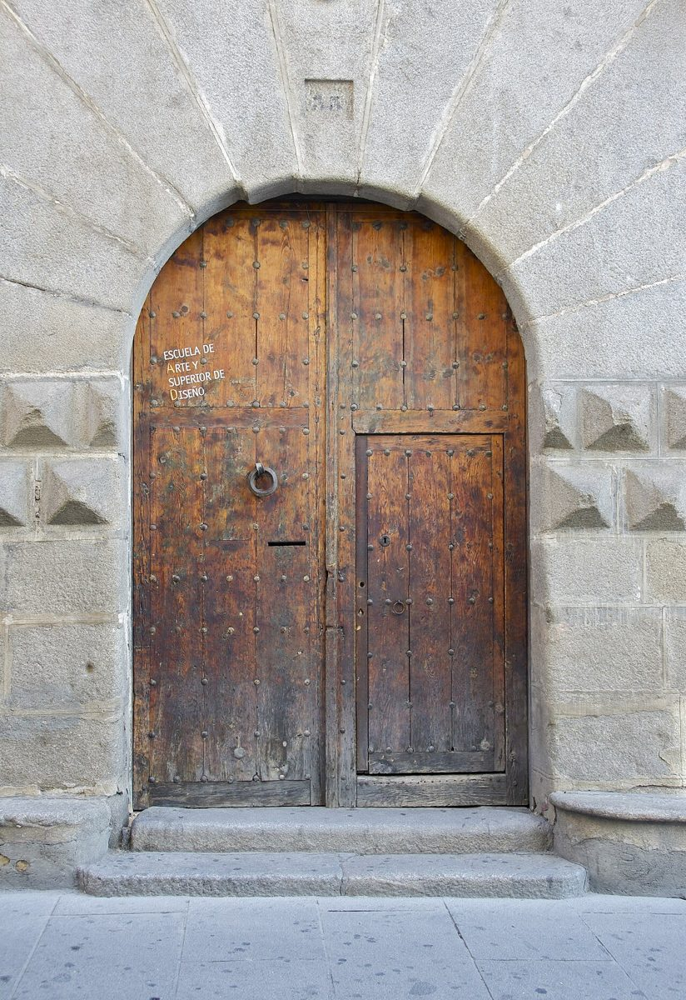
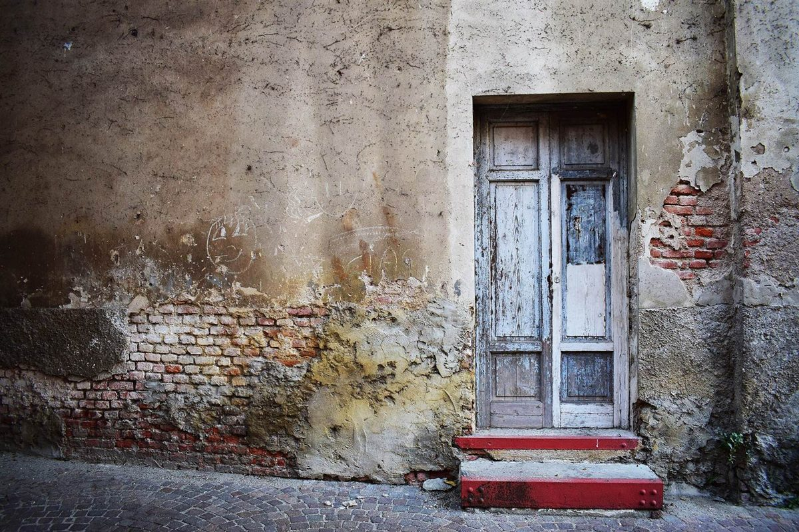

カフェ / 山梨県都留市
tobiraとびら
山梨県都留市にあるカフェ「tobira」のご案内ページです。営業時間やメニューなど、詳しいことは準備中。まずはInstagramをのぞいてみてください。

制作側の連想
蝶番の開き角度でたどる5ページ
店名の由来は分かりません。制作側は「tobira(扉)」という響きから、扉がゆっくり開いていく様子を連想し、5つのページを0°から120°までの「開き角度」として並べました。これは制作側の連想で、お店の理念・由来とは無関係です。
扉のイメージ
国外・撮影地不明の扉と窓
お店の入口ではありません。雰囲気を伝えるためのフリー素材です。

